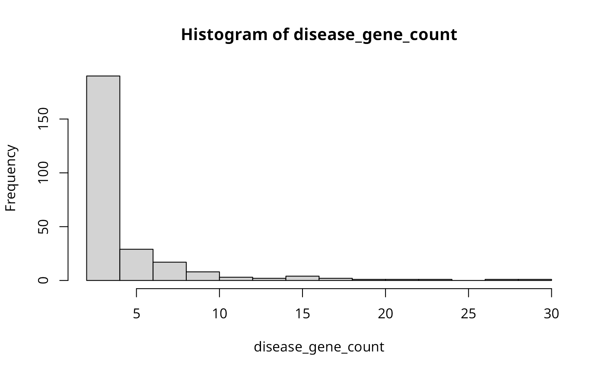

A list containing gene-disease associations obtained from DisGeNET with the
confidence level of 60
A named list, where each element is a
character vector representing the genes associated with a specific MeSH
disease identifier (MeSH ID). The names of the list elements correspond to
the MeSH IDs.
Source
The gene-disease associations were obtained from the DisGeNET database
(https://www.disgenet.org/), which integrates information from various
sources to provide gene-disease associations.
Details
The `gene_disease` data set contains gene-disease associations extracted
from the DisGeNET database with a confidence level of 60
the list represents a MeSH disease identifier, and the corresponding
character vector contains the gene identifiers associated with that
disease.
Examples
library(labyrinth)
data(gene_disease, package = "labyrinth")
# Preview the data
gene_disease[["D000168"]]
#> [1] "TWIST1" "FGFR2" "FGFR1"
# Visualize the pattern
# \donttest{
disease_gene_count <- purrr::map_int(gene_disease, ~length(.x))
hist(disease_gene_count)

# }